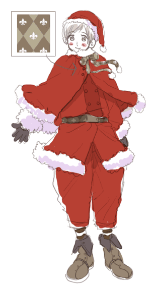

|
さてもうそろそろ、２５日だね！なんだかわくわくしてきたよ！ |
|
……。 |
|
なんだかいやな予感がするんですよ…。
自分犬だからかもしれませんが…。
|
| |
そうかな？僕は楽しいことが起こりそうな気がするんだ！ |
|
「こんばんは！！早速ですが、お願いです！！
フィンランドサンタさん、逃げてください！！
そこから限りなく全力で逃げてください！！
後生ですから！お願いします切実に！
フィンランドサンタさんも花たまごも逃げて！早く！
できるだけ右下の黒い影と目を合わせずに
静かにかつすばやく逃げてください！！」
|
| |
なんだろうこの手紙…？ |
| |
この手紙の通りにした方がいいような気がします。
犬的直感で。 |
| |
で、でもサンタの仕事ほっぽり出すわけにもいかないよ！ |
| |
じゃあもっと早く仕事終わらせて、そしたら逃げよう！ |
| |
いいんですね…？ |
| |
うん！次の手紙よろしくね！ |
| |
「クリスマス企画、盛り上がっていますねっ！
フィンランドさん、花たまごさん、こんにちはっ＾＾
フィンランドさん、サンタ衣装着てるんですよね？
サンタ衣装を着たフィンランドさんの全身イラストが見たいです！
あと、出来る事なら花たまごにもサンタ衣装を…！」
|
| |
はい！こんな感じです。 |
| |
 |
| |
自分はいつもと一緒です。帽子でもかぶった方がいいんでしょうか。 |
| |
|
| |
「モイモイ！フィンランドサンタさん、花たまごちゃん！
花たまごちゃん、人間の言葉が話せるせっかくの
機会なので聞いてみたくなりました。
そのお名前って自分では気にいっていますか？
自分はとても可愛いと思うんですが、友人に言うと驚かれました。
どうしてでしょう？
そしてあと数時間で２５日ですね。
お仕事大変かと思いますが早めに終わらせて下さい…。
こんな八橋にくるんだ言い方しかできずすみません。
でも、バルト三国のみなさんが来てくれるかが
とても気になっていたりもして……。
ロシアさんのところのお仕事で忙しいかなーと思うんですが、
一目見てみたいです。
それでは、自分も黒い影が来る前にお先に退散します！」
|
| |
な、名前は最初「うわ！この人何て名前つける気なんだよ！」
と思いましたが、最近は気にっています。
|
| |
それにしても黒い影…、血祭り、そして逃げろ…
やっぱりなにか不吉な予感がします。
逃げた方がいいと思うんですよ。
|
| |
なにいってるのさ！まだお手紙の返事全部してないのに
そんなことできないよ！花たまご、人前で緊張してるのかな？
|
| |
大丈夫だよ。聖なる日だもの。
きっと神様だって守ってくれるって。 |
| |
…どこまでもポジティブな人だ…。 |
| |
こんなお手紙もありますよ。
「サンタさん、そこから逃げないならせめて
旦那さんを隣に連れてきたほうが良いと思います。
心から。あの強おい旦那さんでも勝てるか
どうかある意味微妙な影が近付いてますから…！！」
|
| |
だから旦那なんかいませんってばー…。
|
| |
もー花たまごも心配性なんだから！ |
| |
気にしすぎなだけで済めばいいんですが… |
| |
|
| |
「こんばんは！あれっ、
フィンランドサンタさんへのお手紙はこちらでよかったのでしょうか？
もうそろそろお仕事に行く時間ですかね？
お体にお気をつけて、頑張ってくださいね！
ぁ、あと、クリスマスプレゼントにフィンランドサンタさんの
屈託のない素敵な笑顔が見たいです★
心置きなく年を越せそうです。」
|
| |
僕の笑顔ですか？わかりました！お安いご用ですよ。
そうだね仕事行く前に写真で一枚いきますか！ |
| |
写真ですか。それはいい記念になりそうですね。 |
| |
|